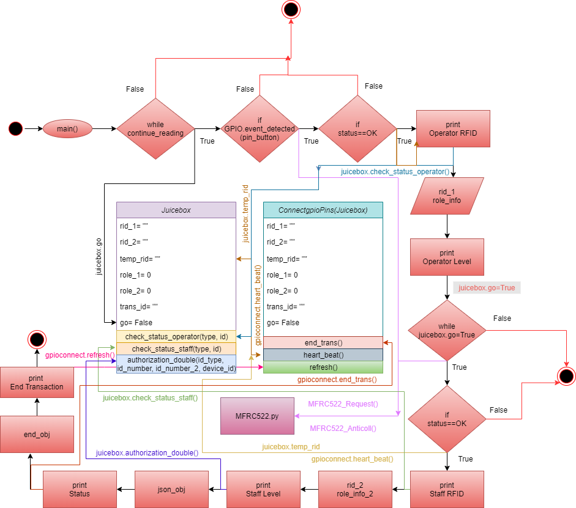

JuiceBox documentation!¶
Introduction to JuiceBox¶
JuiceBox project aims on a device that takes credentials and authenticate against granted rights. Operator and Staff tokens are scanned and if they are correct then only they are given authorization to use the machinery otherwise the JuiceBox blinks multiple times.
Goals:¶
A device to intake user credentials, authenticate against granted rights, and enable/disable usage based on those.
Utilize RFID as a medium for user credentials.
Control usage of the machines via controlling power to it.
Usage:¶
Place a user’s RFID tag in front of the scanner.
Press the button to scan tag, light will indicate scan status
If the scan was succesful, the LED will blink once.
If NOT – The LED will blink multiple times and the sequence will reset.
Place a staff member’s RFID tag in front of the scanner and press the button
If permissions are correct, JuiceBox will blink the LED once and then leave it on.
If permissions are incorrect, JuiceBox will blink the LED multiple times and the sequence will reset
Building a JuiceBox:¶
The MFRC22 reader we currently employ works via SPI interface. Use the following pinout scheme to connect the RFID, button switch, status LED and relay :
Device |
Name |
Pin # |
Pin Name |
|---|---|---|---|
MFRC22 |
SDA |
24 |
GPIO 8 |
SCK |
23 |
GPIO 11 |
|
MOSI |
19 |
GPIO 10 |
|
MISO |
21 |
GPIO 9 |
|
IRQ |
None |
None |
|
GND |
GND |
Ground |
|
RST |
22 |
GPIO 25 |
|
3.3V |
1 |
3v3 |
|
Button |
COM |
40 |
GPIO 21 |
NO |
GND |
Ground |
|
LED |
+ |
33 |
GPIO 13 |
- |
GND |
Ground |
|
Relay |
+ |
3 |
GPIO 2 |
- |
GND |
Ground |
Connect the Button switch poles to GPIO 40 and Ground
Connect the LED to GPIO 10 and Ground
Connect the Relay to GPIO 3 and Ground
Workflow:¶
Code documentation: